AIで賢く
スピーディに

査定
AI一括査定で大阪の廃品回収相場がすぐ分かる！
AIで賢く
スピーディに
査定
AI一括査定で大阪の廃品回収相場がすぐ分かる！
廃品の処理に困った
業者から見積りを
もらったけど、高い気が
するから他も見てみたい
とりあえず、いくら
かかるか知りたい
引っ越しするから
要らない家具を処分
したい
複数の廃品回収業者から一度に見積もりを 得られるサービスです。
一括査定により廃品や不用品の回収費用を
比較し、最もお得でニーズに合った業者を 選ぶことができます。
一度で複数の業者から見積もりを得られます。 電話や個別の問い合わせを繰り返す手間が省け、 効率的に業者を選ぶことができます。
比較検討することで、価格だけでなくサービス 内容や回収の対応速度、信頼性なども総合的に 判断できます。
一括査定を利用することで、業者間の競争が
生まれ、よりお得な価格で回収を依頼できる
可能性が高まります。
信頼できる業者を厳選しているため、トラブル や廃品回収の不法投棄や不適切な処理といった リスクを減らすことができます。
AI簡単査定サービスは、廃品回収を依頼す る際に、スマートフォンやカメラで撮影し た廃品の画像をアップロードするだけで、 AIが自動的に廃品の種類や量を判別し、回 収相場額を提供する革新的なサービスです。 このサービスにより、従来の見積もり手続 きの手間を大幅に削減し、スピーディーに 相場額を確認できます。
処分したい物を撮影して画像をアップロードする だけで、回収相場額を確認することができます。 専門的な知識も必要なく、誰でも簡単に利用可能 です。
AI技術がアップロードされた画像を解析し、廃品 の種類や数量、状態を自動で判断します。その結 果をもとに、回収相場額を瞬時に算出します。
画像をアップロードしてスグに算出されるため、 従来の方法に比べて時間を大幅に短縮できます。
結果にはAIの判定根拠が含まれており、ユーザー はどのようにしてその金額が算出されたかを確認 できます。これにより、料金の透明性が確保され 信頼性の高いサービスとなっています。
処分したい物をスマートフォンや デジタルカメラで撮影します。
撮影した画像を専用のフォームに アップロードします。
AIが画像の内容を解析し、
廃品の種類や状態を判断します。

スグにAIが解析結果を提示します。 回収相場額だけでなく、その内訳 についてもその場で確認できます。
業者への問い合わせを行います。 必要に応じて、見積もりを比較し、 最適な業者を選ぶことも可能です。
AI簡単査定サービスは、最新の技術を駆使して迅速
かつ簡便に廃品の回収相場額を提供しますが、AIが
提示する相場額はあくまで参考値であり、必ずしも
正確な金額を保証するものではありません。
以下の注意事項をご確認頂き、AI相場サービスを安
全かつ有効にご活用ください。また必要に応じて、
専門業者に正確な情報をお問い合わせください。
AIは画像から廃品の種類や状態を判別し、
回収相場額を算出しますが、照明の具合や
画像の質、廃品の配置などの要素により、
正しい判定が出来ない場合があります。
AIの回答はあくまでも参考値とし、最終的な
判断はご自身の責任で行ってください。
正確な回収額を確認するためには、業者の 現地確認が必要な場合があります。AIの回答 を参考にした上で、現地確認が必要な場合は 業者に依頼することをお勧めします。
AIの回答には、実際の回収作業時に発生する 可能性のある追加費用(特殊な処理が必要な廃 品や、予期しない状況による追加作業費など) が含まれていない場合があります。正確な費 用や項目については、業者に直接お問い合わ せください。
本サービスを利用する際は、AIによる回答結 果を元にした判断や行動について、すべて自 己責任で行ってください。サービス提供者は AIの回答結果に基づく損害やトラブルについ て一切の責任を負いません。
アップロードされた画像データは、AI解析の ために使用されますが、サービス提供者は個 人情報の保護に最大限の注意を払います。プ ライバシーポリシーをよくお読み頂き、ご了 承の上でご利用ください。
処分したい物の画像をアップロードするこ とで、AIが自動的に廃品の種類や量を判別 し、回収相場額を提供するサービスです。 簡単な操作で、スグに結果が得られます。
通常、画像をアップロードしてから
スグにAIが結果を提供します。
AIは高度な画像解析技術を用いて見積もりを 行いますが、照明や画像の質、廃品の配置に よって正しい判定が出来ない場合があります。 見積もりはあくまで参考値としてご利用頂き、 最終的な判断は現地確認などで行うことをお 勧めします。
お客様情報を入力して頂くことで、
複数業者から見積もりの取得が可能です。
無料でご利用いただけます。
アップロードされた画像は、見積もり目的で のみ使用され、個人情報の保護に最大限の注 意を払っています。サービスのプライバシー ポリシーに従い、個人情報が第三者に不適切 に共有されることはありません。
見積もり額に納得できない場合は、別業者にも 見積もり依頼が出来ます。また、詳細な情報に ついて業者に直接問い合わせたり、別の業者と 比較検討を行うこともお勧めです。
はい。お問い合わせ後、すぐに回収を依頼する ことが可能です。 見積もり結果のページから直接依頼するか、指 定の業者と連絡を取り、回収日等の詳細を相談 してください。
各業者ごとに異なりますので、ご確認ください。